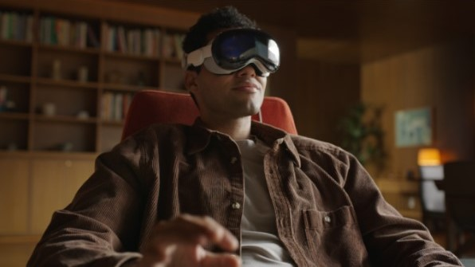

Augmented VR
Augmented VR ehk liitvirtuaalreaalsus on tehnoloogia, mis kombineerib virtuaalreaalsuse (VR) ja liitreaalsuse (AR) omadused. Virtuaalreaalsuses oled täielikult virtuaalses maailmas, samas liitreaalsus segab päris maailma virtuaalsete objektidega. Augmented VR võimaldab sul näha ja suhelda virtuaalsete asjadega nagu oleksid nad päriselt sinu ümber. See tehnoloogia loob erilise kogemuse, kus saad füüsilises maailmas liikuda ja samal ajal mängida või töötada virtuaalsete esemetega.
Mis on Augmented VR?
Augmented VR võimaldab arendajatel luua rakendusi, mis toovad VR-i sügavuse ja AR-i paindlikkuse ühte platvormi. See tähendab, et kasutajad võivad kanda VR peakomplekti, kuid näevad enda ümber oma reaalset keskkonda, mida täiustatakse virtuaalsete objektide ja interaktiivsete elementidega.
Kuidas Augmented VR töötab?
Augmented VR kasutab keerukat tehnoloogiat, sealhulgas ruumilist jälgimist, masinõpet ja andurtehnoloogiaid, et tuvastada kasutaja füüsilist keskkonda ja paigutada digitaalseid objekte reaalajas ja täpselt füüsilisse maailma. See loob illusiooni, et virtuaalsed objektid ongi osa reaalsest maailmast. Eksempel Apple Vision Pro-st
Rakendused
Augmented VR rakendused on väga mitmekesised, ulatudes haridusest ja väljaõppest kuni meelelahutuse ja mängudeni. Näiteks meditsiiniõppes võimaldab Augmented VR üliõpilastel harjutada operatsioone virtuaalsetel mudelitel, mis asetatakse nende füüsilisele töölaual. Samuti saavad mängud luua täiesti uusi kogemusi, ühendades reaalse maailma elemente mängusiseste väljakutsetega. Näide mängust Pokemon GO ja Google AR animals.
Tulevik
Augmented VR on suhteliselt uus valdkond, kuid selle potentsiaal on tohutu. Tulevik võib tuua veelgi rohkem süvaimmersiivseid kogemusi ning muuta viisi, kuidas me töötame, õpime ja suhtleme.